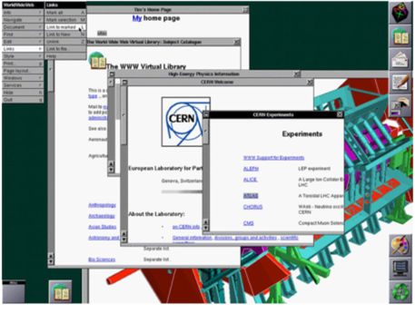
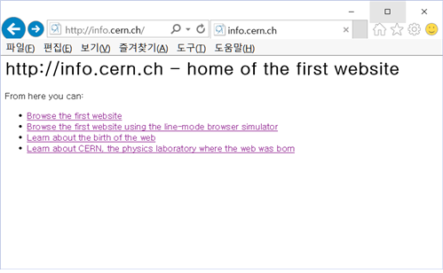

WWW History

- 팀 버너스 리가 웹을 구상한 것은 학생 시절부터다.
- 옥스퍼드 대학 시절 내내 '정보의 연결'을 생각한다.
- 1980년에 CERN(Conseil Europeen pour la Recherche Nucleaire, 유럽 입자물리학 연구소)과 양성자 가속기 작업에 관해 계약을 하는데, 작업 도중 짬을 내 CERN 연구원과 그들의 프로젝트를 정리하는 프로그램인 '인콰이어(Enquire)'를 만들면서 머리 속에 구상하던 '정보의 연결' 작업을 시도한다.
- 인콰이어는 요즘 브라우저의 원형 쯤 되는 프로그램으로 보면 된다.
- 1984년 9월에는 CERN에 정식 연구원으로 들어가 관련 프로그램을 작성하지만 실패한다.
- 그는 1984년 말부터 RPC를 만들고 다시 '인콰이어'를 만들며 머리 속 구상을 옮기는 작업을 시도하고, 1989년 3월에 네트워크 보고서를 올린다.
- 처음 올린 보고서는 채택되지 않았다. 그는 웹을 개발하기 위해 로버트 카일리아우(Robert Cailliau)라는 네트워크 전문가의 도움을 받아 1990년에 네트워크 보고서를 다시 올린다.
- 역시 처음에는 채택되지 않았으나 마침 넥스트에서 만든 컴퓨터인 'Next Cube'가 CERN에 들어오면서 네트워크 실험에 대한 허락이 떨어진다.
- 그는 이름을 '세계적인 넓은 거미줄(world wide web)'로 결정하고 1990년 10월부터 웹 코딩을 시작해 HTML(HyperText Markup Language) 문서와 HTTP(HyperText Transfer Protocol) 프로토콜, URI(Uniform Resource Identifier) 등을 만든다.
- 1990년 11월에 클라이언트 프로그램(웹 브라우저)을 만들고 12월에는 브라우저로 HTML 문서를 연결한다.
- 역시 같은 달인 12월에 최초의 웹주소인 'info.cern.ch'를 만들고 여러 시스템에서 'info.cern.ch'의 접속에 성공함으로써 마침내 웹시대를 열게 된다.
- 이렇게 등장한 웹을 보고 그 가치를 인정한 CERN에서는 대학생인 니콜라 펠로우(Nicola Pellow)를 인턴 연구원으로 붙여준다. 그녀는 1991년 8월까지 근무하면서 라인모드 브라우저를 개발한다.
- 이후 팀 버너스 리는 빠른 속도로 웹을 발전시킨다. 1991년 5월에 CERN에서 사용할 수 있는 웹을 발표하고, 8월에는 뉴스그룹에 웹 도구 발표, 12월에는 미국의 텍사스주 산안토니오에서 열린 '하이퍼텍스트91 학술회의'에서 월드와이드웹에 대해 발표함으로써 웹이 점차 외부에 그 모습을 드러낸다.
- 이후 1994년 5월 25일 350명의 전문가가 모여 CERN의 강당에서 최초의 웹 회의가 열리고, 그해 10월에 미국 MIT 대학에서 W3C(World Wide Web Consortium)가 출발하면서 본격적인 웹의 시대로 넘어간다.